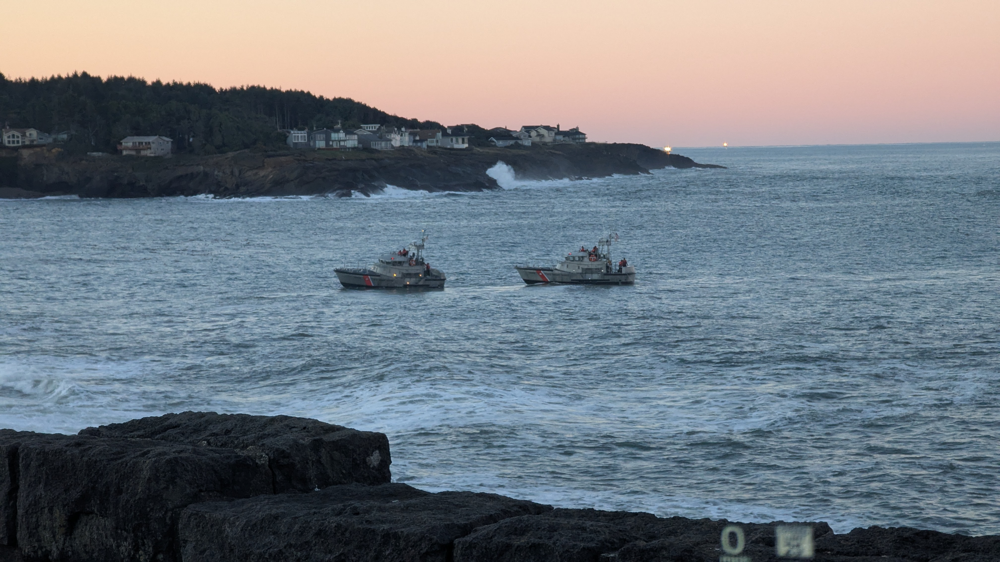

Ope...A Life
4
#pnw
Yesterday morning we woke up early (or, more correctly, I woke up early and Stacy woke up at her regular time), grabbed some donuts from Depoe Baykery (love the name!), and we went to Depoe Bay to look for some whales.
It should be noted that prime whale watching time is mid-December to mid-January and April through May so we were a little late to the party and looked for whales on their way to Baja who were similarly delayed (though probably not because they'd picked up pastries at the best bakery in the area).
No luck. Though we did see the Coast Guard hanging around, running some practice sessions towing a boat through the narrow passage to the bay.

It's cool watching them practice this. The channel they have to navigate is shallow and narrow. Oftentimes they need to line everything up then wait for the correct set of waves to get through safely. Check out this video of what it looks like from the boat being towed.
It's also neat to note the number of birds chilling on the water. The video at the top of this page doesn't have the greatest resolution, but you can still see a small number of the many birds that were out there in the lower right-hand corner of the video. They're just bobbing along, riding the swells, waiting for breakfast to swim on by.
caveat lector